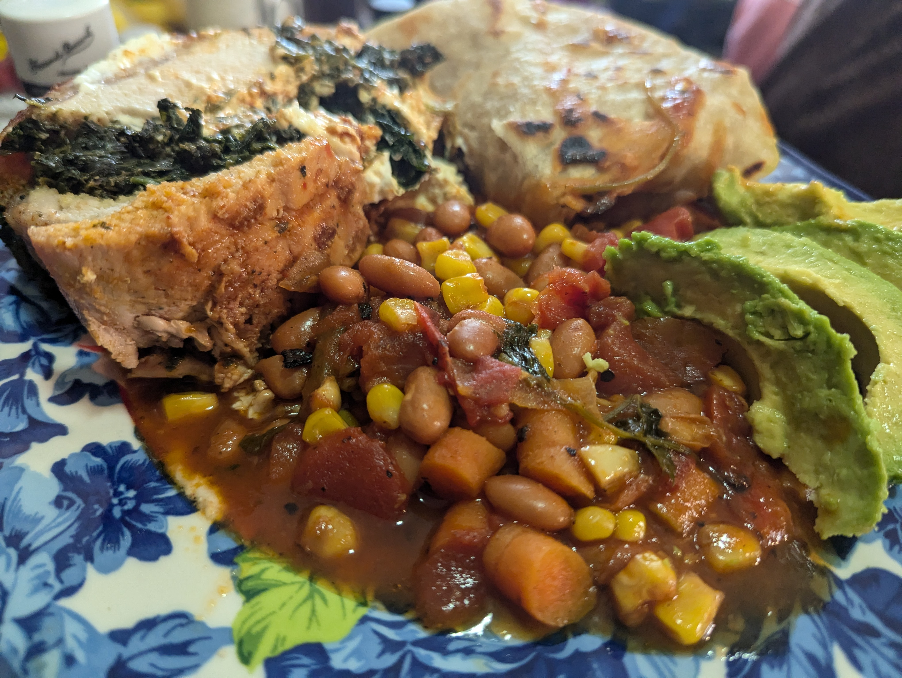

Several Years of Thursdays
Food Culture Essay · Recipe
I didn't grow up eating githeri, so I never had time to get tired of it, and that's probably the reason I enjoy it as much as I do. I feel like that's important to say because I know the feeling on the other side. I grew up eating school lunches. There were some meals that I actually looked forward to, but eventually those meals got run through the rotation so much to the point that it turned into something else. You'd walk in, see it on the line, and think: oh lord, not this again. Nothing about the food had changed. What changed was that it stopped being something special because they turned it into a staple. Once a dish becomes too common it doesn't matter how good it is. You stop enjoying it.
So when Kenyans who ate githeri as a staple meal in school told me I was going to hate it, I understood exactly what they were telling me. They weren't reviewing the food. They were describing what years of repetition does to a person. A few of them said their school got it right, they didn't over-serve it, and made it sweet when it came up in the rotation. Most of them just laughed at me. Then my Kikuyu friends came at it from the completely opposite direction. “Give me githeri every day, we will never get tired of this.”
That's the split I kept running into. The Kenyans I know either love this dish or want nothing to do with it, and which side they land on has less to do with the maize and beans than with where they first met them, but once people found out I was learning Kenyan dishes, githeri kept coming up anyway. The consensus was that a trip into Kenyan cuisine isn't complete until you've had it.
I asked around for how to make it and the lists came back nearly identical. Maize, beans, carrots, tomatoes, sometimes potatoes, with the seasoning left up to whoever's cooking. That consistency struck me. We have a dish here that does a similar job we call goulash, or whatever your family calls it, usually a combination of vegetables, meat, and beans thrown in a pot on a weeknight, but goulash changes from house to house until two versions barely resemble each other. Githeri doesn't. It stays recognizably itself across households, across counties, across generations. Which is exactly what you'd expect from a food that has to feed a lot of people reliably, and it's also exactly why it ends up on a school menu until people can't stand it. The thing that makes it dependable is the thing that makes it tiresome.
So I gathered my intel and went to the grocery store. I got everything I needed, came home, put on some Sauti Sol, poured a glass of wine, and set my phone up to record. It came together easily, although the cooking time ran long because I hadn't soaked the beans overnight. And here's the magic of it for me: a pot of separate, plain ingredients turns into something that I can only describe as maize and bean stew. I made chapatis to go with it. I remember standing over the pot thinking, I don't know why a whole population of people claims to hate this, it's really good, but that's the point. I met this dish as a grown man, at my own stove, with music on and a drink poured. Nobody handed it to me on a tray. The only difference between me and the friend who groans when he hears the word is several years of Thursdays.
I posted the video and got a mix of praise and curiosity about what I actually thought. I said it was great. Sometimes a food just hits, and githeri hits for me. I've cooked it almost weekly since, although the version I cook now is not the one I was taught.
Ingredients
Githeri
Serves 8 as a main · Active 40 min · Total about 2 hr 15 min, plus an overnight soak
- 2 cups dry beans, soaked overnight
- 5 cups corn (about 2½ lbs frozen, or three 15-oz cans, drained)
- 2 large potatoes
- 3 medium carrots
- 1 whole yellow onion
- 1 whole green bell pepper
- 3 green onions
- Handful of cilantro
- 1 can fire-roasted diced tomatoes
- 1 tablespoon tomato paste
- 2 tablespoons seasoned salt
- 2 tablespoons curry powder
- 1 tablespoon onion powder
- 1 tablespoon garlic powder
- 1 tablespoon garam masala
Method
Soak the beans overnight in plenty of cold water. Skip this and you're adding well over an hour to the cook, I've done it both ways, presoaking is definitely the way to go to save time and end up with a gasless bean.
Drain the beans, combine them with the corn in a large pot, and boil until the beans are tender, about 45 minutes to an hour.
Dice the potatoes into small cubes and fry them in oil over medium-high heat until golden brown. Set aside.
To that same oil add the onions and cook until golden brown, then stir in the tomato paste. Stir it through well before adding the diced carrots and bell pepper. Cook while continuously stirring for about five minutes.
Add the beans and corn to the pot and stir in, then add the fire-roasted diced tomatoes and the dry seasonings.
Add water enough to cover the food, then stir, and let simmer covered for 45 minutes. Now add the potatoes, stir the pot, cover, and let simmer another 15 minutes.
Garnish with chopped green onions and cilantro, and serve.
Closing
Two departures worth naming. I use sweet corn, not the dried white maize githeri is properly built on, mine comes out softer and sweeter, closer to a stew than the original texture. And that seasoning list is a Bay Area pantry: seasoned salt, curry powder, garlic and onion powder, garam masala. It's a good pot of food, but it's not the dish I spent the whole first half of this piece admiring for being consistent.
Which brings me to the part I haven't worked out. This version is going on the menu in Kisumu.
Kisumu is a Luo city, and githeri reads as Kikuyu home cooking. Putting it on a menu there is a different act than putting it on a menu in Nairobi. And I'd be selling it to people who may have already had it a few hundred times before turning eighteen, seasoned by an American who found it charming precisely because he showed up late. I don't know yet whether the answer is that I've made it different enough to be worth ordering, or whether that's just the story I'm telling myself about a dish I have no history with. I know I'll cook it either way. I'm less sure who I'll be cooking it for.
— Chef Dumela